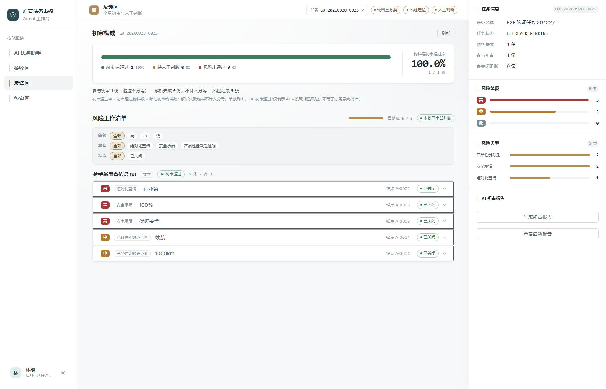

统一接收审核材料
上传图片、视频或文档，确认本次审核关注点。解析结果保留位置锚点，失败材料有明确的补充入口。
03 / CASE STUDY · AGENT
返回作品风险有依据，
整改有来处。
串联宣传物料接收、AI 初审和风险整改。AI 提供线索与建议，法务保留判断、签名和最终批准，让每次修改都可追溯。
查看 GitHub广宣审核 / 反馈区

上传图片、视频或文档，确认本次审核关注点。解析结果保留位置锚点，失败材料有明确的补充入口。
按初审通过、待人工判断和风险未通过整理材料，独立记录每个问题，由法务确认、标记误判或转入整改。
跟踪文字差异和 AI 复审，保留人工处理记录。风险关闭和最终批准受法务权限与签名约束。
Vue / Java。业务模型串联任务、物料、版本、风险和审核记录，状态机、权限与签名规则约束关键操作。
模型适配支持规则模拟和千问服务；千问链路包含 OCR、ASR、向量检索与重排。初审报告数量由服务端汇总，异步任务展示实际进度。
AI 初审通过不等于法务最终批准。正式宣传物料仍须由有权限的法务人员确认，本页展示不构成法律意见。
图像 OCR 无可靠坐标时仅提示大致区域。版本差异支持文字，图片与视频差异不支持；生产认证与生产级文件中转仍需完善，当前仅供本地联调和验证。
截图中的任务和历史演示角色均为测试示例，物料通过率不代表模型准确率、真实审核效果或节省工时。